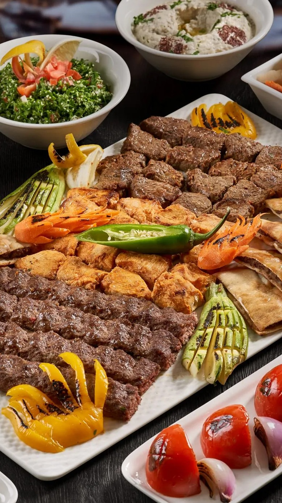
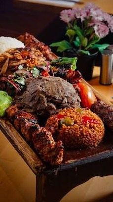
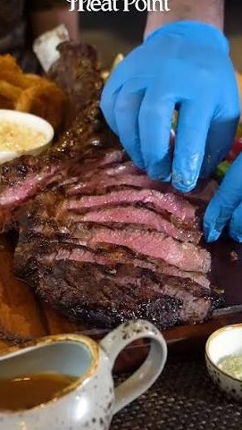

Authentic Turkish Cuisine
Welcome to the culinary heart of Meat Point Astana. Our menu is carefully crafted to bring you the authentic taste of Turkish cuisine, right here in the capital. We pride ourselves on using only the finest, freshest, and strictly halal ingredients sourced from trusted local farmers. Whether you are craving a juicy, perfectly grilled kebab or a comforting, traditional pide, our expert chefs prepare every meal with passion and dedication.
Explore our diverse selection of dishes designed to satisfy every palate. From hearty main courses that feature our signature premium beef and lamb, to light, refreshing salads and traditional Turkish beverages, there is something for everyone. Please note that our meat is grilled over an open fire to ensure that distinct, smoky flavor. Take a look at our detailed menu table below to find your next favorite dish. We constantly update our seasonal offerings, so be sure to ask our friendly staff about the chef's daily specials when you visit.



Dietary Information
- Halal
- All our meat is 100% certified Halal according to local standards.
- Vegetarian
- Dishes marked with a leaf symbol contain no meat ingredients.